Publications

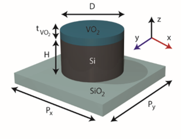
A. Howes, Z. Zhu, D. Curie, J. R. Avila, V. D. Wheeler, R. F. Haglund, J. Valentine "Optical Limiting Based on Huygens’ Metasurfaces”, Nano Letters, vol. 20, pg. 4638–4644, 2020.
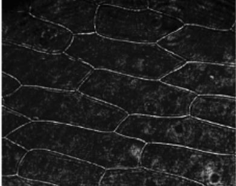
Y. Zhou, H. Zheng, I. I Kravchenko, J. Valentine "Flat optics for image differentiation”, Nature Photonics, vol. 14, pg. 316–323, 2020.
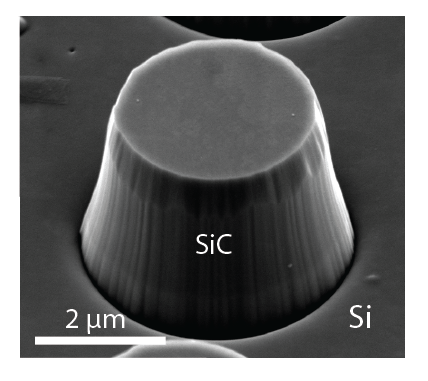
A. Howes, J. R. Nolen, J. D. Caldwell, and J. Valentine "Near‐Unity and Narrowband Thermal Emissivity in Balanced Dielectric Metasurfaces”, Advanced Optical Materials, vol. 8, pg. 1901470, 2020.
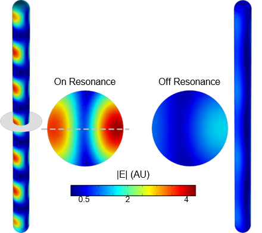
T. E. Beechem, C. B. Saltonstall, T. Gilbert, J. Matson, F. Ugwu, R. Kasica, F. J. Bezares, J. Valentine, J. D. Caldwell "Influence of spatial dispersion on spectral tuning of phonon-polaritons”, Physical Review B, vol. 100, pg. 205419, 2019.
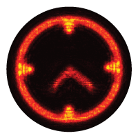
Y. Zhou, I. Kravchenko, H. Wang, H. Zheng, G. Gu, and J. Valentine "Multifunctional metaoptics based on bilayer metasurfaces”, Light: Science & Applications, vol. 8, pg. 80 2019.
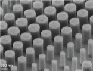
Y. Zhou, I. Kravchenko, H. Wang, J. R. Nolen, G. Gu, and J. Valentine "Multilayer Non-interacting Dielectric Metasurfaces For Multiwavelength Metaoptics”, Nano Letters, vol. 18, pgs. 7529-7537, 2018.
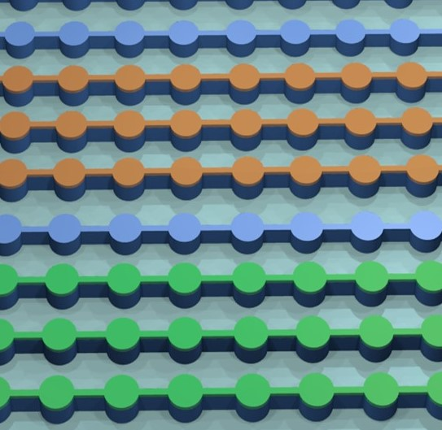
A. Howes, W. Wang, I. Kravchenko, and J. Valentine "Dynamic transmission control based on all-dielectric Huygens metasurfaces”, Optica, vol. 5, pgs. 787-792 2018.
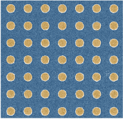
Z. Coppens and J. Valentine "Spatial and Temporal Modulation of Thermal Emission”, Advanced Materials, 1701275, 2017.
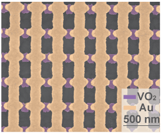
Z. Zhu, P.G. Evans, R.F. Haglund, and J. Valentine "Dynamically Reconfigurable Metadevice Employing Nanostructured Phase-Change Materials”, Nano Letters, vol. 17, pgs. 4881-4885, 2017.
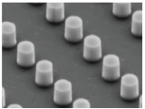
B.A. Slovick, Y. Zhou, I.I. Kravchenko, D.P. Briggs, P. Moitra, S. Krishnamurthy, and J. Valentine "Metasurface Polarization Splitter”, Philosophical Transactions of the Royal Society A, vol. 375, pg. 20160072, 2017.

W. Li, J. Valentine "Harvesting the Loss: Surface Plasmon-Based Hot Electron Photodetection”, Nanophotonics, vol. 7, pgs. 177-191, 2017.
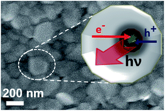
E. M. Talbert, H. F. Zarick, N. J. Orfield, W. Li, W. R. Erwin, Z. R. DeBra, C. P. McDonald, K. R. Reid, J. Valentine, S. J. Rosenthal, and R. Bardhan "Interplay of structural and compositional effects on carrier recombination in mixed-halide perovskites”, RSC Advances,
vol. 6, pgs. 86947 - 86954, 2016.
A. M. Urbas, Z. Jacob, L. Dal Negro, N. Engheta, A. D. Boardman, P. Egan, A. B. Khanikaev, V. Menon, M. Ferrera, N. Kinsey, C. DeVault, J. Kim, V. Shalaev, A. Boltasseva, J. Valentine, C. Pfeiffer, A. Grbic, E. Narimanov, L. Zhu, S. Fan, A. Alù, E. Poutrina, N. M Litchinitser, M. A. Noginov, K. F. MacDonald, E. Plum, X. Liu, P. F. Nealey, C. R. Kagan, C. B. Murray, D. A. Pawlak, I. I. Smolyaninov, V. N. Smolyaninova and D. Chanda "Roadmap on Optical Metamaterials”, Journal of Optics,
vol. 18, pg. 093005, 2016.
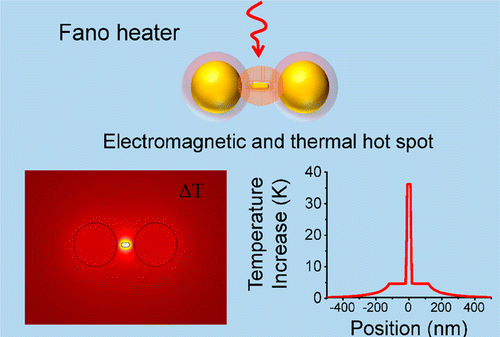
L. K. Khorashad, L. V. Besteiro, Z. Wang, J. Valentine, A. Govorov "Localization of Excess Temperature Using Plasmonic Hot Spots in Metal Nanostructures: Combining Nano-Optical Antennas with the Fano Effect”, Journal of Physical Chemistry C,
vol. 120, pgs. 13215-13226, 2016.
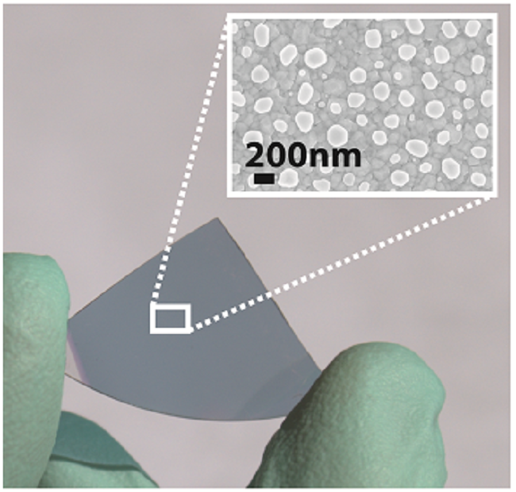
Z. Coppens, I. Kravchenko, and J. Valentine "Lithography-Free
Large-Area Metamaterials for Stable Thermophotovoltaic Energy
Conversion”, Advanced Optical Materials,
vol. 4, pg. 671, 2016.
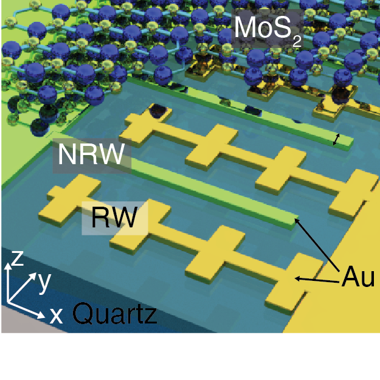
W. Wang, A. Klots, D. Prasai, Y. Yang, K. I.
Bolotin, and J. Valentine "Hot
Electron-Based Near-Infrared Photodetection Using Bilayer MoS2”,
Nano Letters, vol. 15, pg. 7440, 2015.
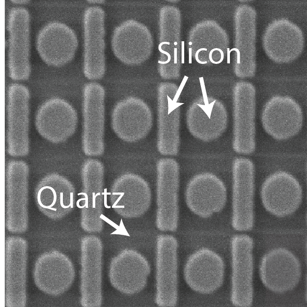
Y. Yang, W. Wang, A. Boulesbaa, I. I.
Kravchenko, D. P. Briggs, A. Puretzky, D. Geohegan, J. Valentine "Nonlinear
Fano-Resonant Dielectric Metasurfaces”, Nano
Letters, vol. 15, pg. 7388, 2015.
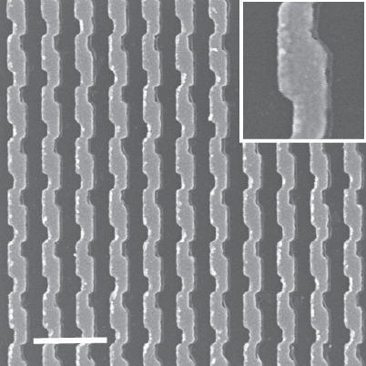
W. Li, Z. J. Coppens, L. V. Besteiro, W.
Wang, A. O. Govorov and J. Valentine "Circularly
Polarized Light Detection with Hot Electrons in Chiral Plasmonic
Metamaterials”, Nature Communications,
vol. 6, pg. 8379, 2015.
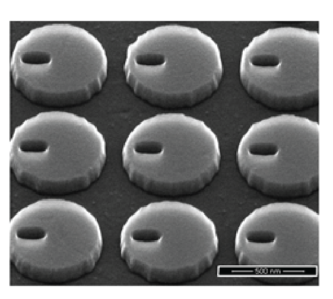
A. Jain, P. Moitra, T. Koschny, J. Valentine
and C. M. Soukoulis, "Electric
and Magnetic Response in Dielectric Dark States for Low Loss
Subwavelength Optical Meta Atoms”, Advanced
Optical Materials, vol. 3, pgs. 1431-1438, 2015.
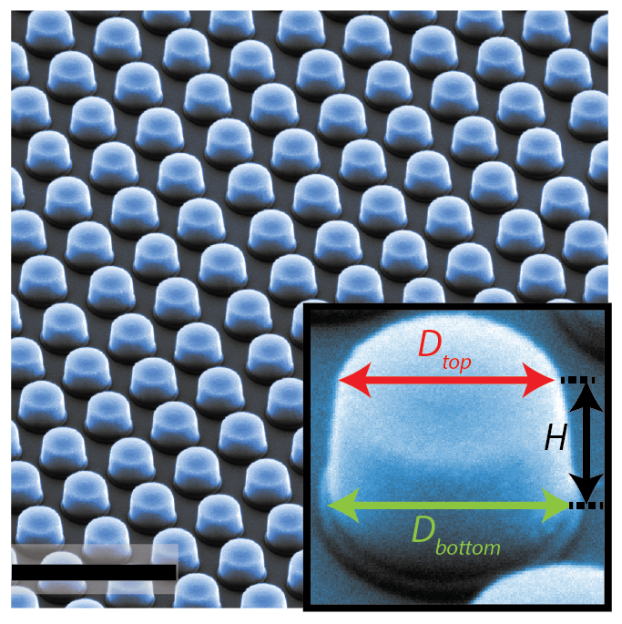
P. Moitra, B. A. Slovick, W. Li, I. I.
Kravchencko, D. P. Briggs, S. Krishnamurthy, and J. Valentine, "Large-Scale
All-Dielectric Metamaterial Perfect Reflectors", ACS
Photonics, vol. 2, pgs. 692-698, 2015.
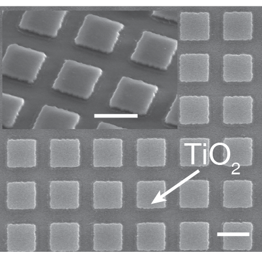
W. Wang, A. Klots, Y. Yang, W. Li, I. I.
Kravchenko, D. P. Briggs, K. I. Bolotin, and J. Valentine,"Enhanced
Absorption in 2D Materials Via Fano-Resonant Photonic Crystals",
Applied Physics Letters, vol. 106, pg.
181104, 2015.
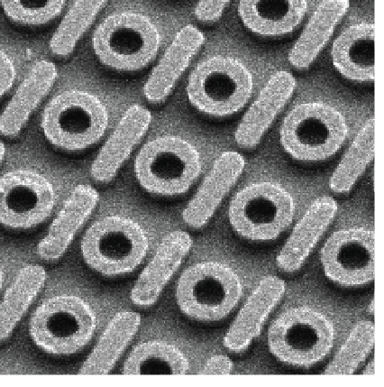
Y. Yang, I. I. Kravchenko, D. P. Briggs, and
J. Valentine,"All-dielectric
metasurface analogue of electromagnetically induced transparency",
Nature Communications, vol. 5, pg. 5753,
2014.
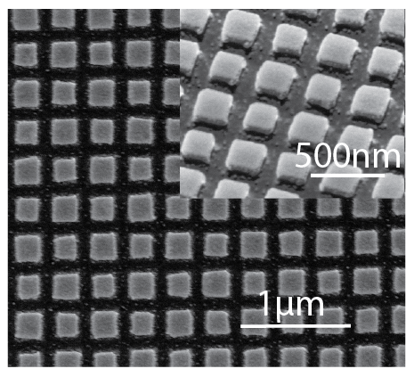
W. Li and J. Valentine,"Metamaterial
Perfect Absorber Based Hot Electron Photodetection", Nano
Letters, vol. 14, pgs. 3510-3514, 2014.
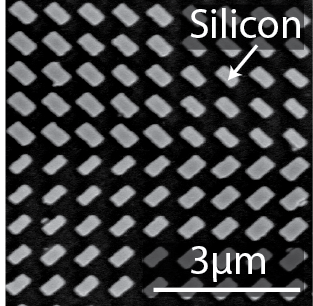
Y. Yang, W. Wang, P. Moitra, I. I.
Kravchenko, D. P. Briggs, and J. Valentine,"Dielectric
Meta-Reflectarray for Broadband Linear Polarization Conversion and
Optical Vortex Generation", Nano Letters,
vol. 14, pgs. 1394-1399, 2014.
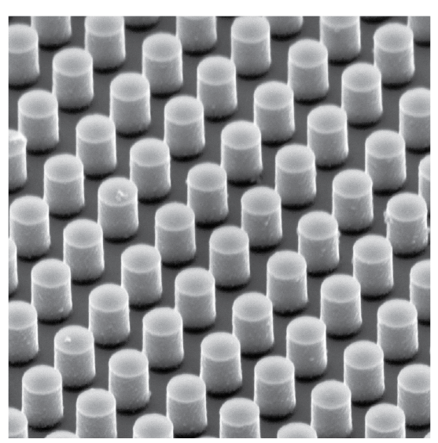
P. Moitra, B. A. Slovick, Z. G. Yu, S.
Krishnamurthy, and J. Valentine,"Experimental
Demonstration of a broadband all-dielectric metamaterial perfect
reflector", Applied Physics Letters,
vol. 104, pg. 171102, 2014.
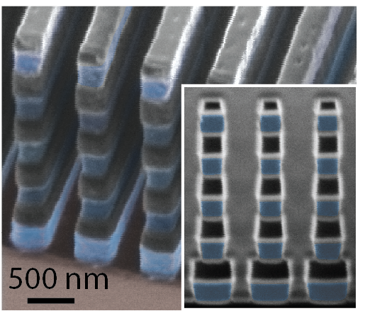
P. Moitra, Y. Yang, Z. Anderson, I. I.
Kravchenko, D. P. Briggs, and J. Valentine,"Realization
of an All-dielectric Zero-index Optical Metamaterial", Nature
Photonics, vol. 7, pgs. 791-795, 2013.
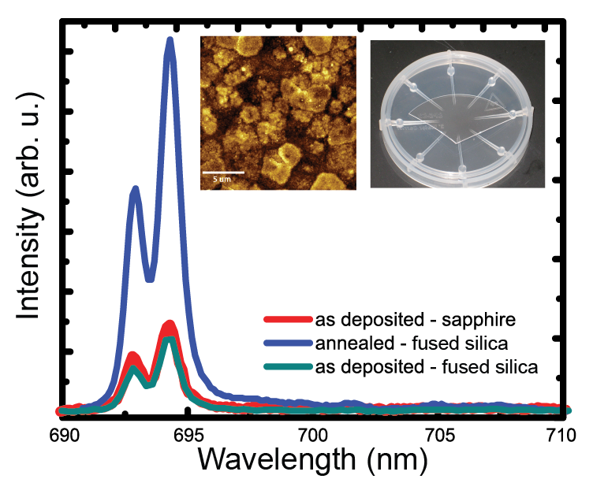
W. Li, Z. Coppens, G. Walker, and J.
Valentine,"Electron
Beam Physical Vapor Deposition of Thin Ruby Films for Remote
Temperature Sensing", Journal of Applied Physics,
vol. 113, no. 16, pg. 163509, 2013.
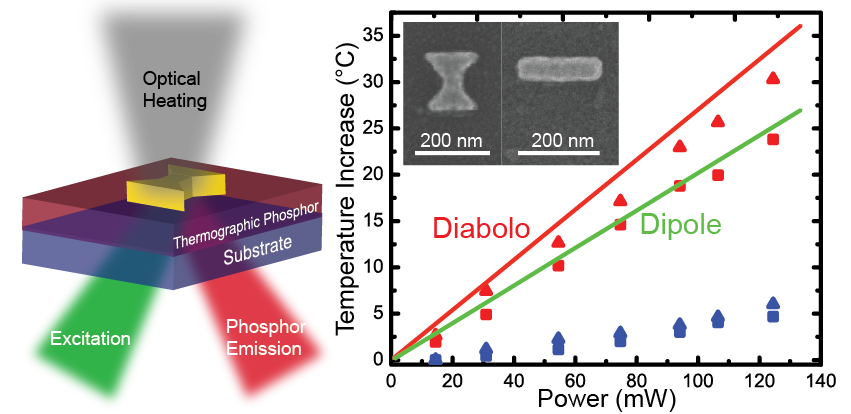
Z. Coppens, W. Li, G. Walker, and J.
Valentine,"Probing
and Controlling Photothermal Heat Generation in Plasmonic
Nanostructures", Nano Letters, vol.
13, no. 3, pgs. 1023-1028, 2013.
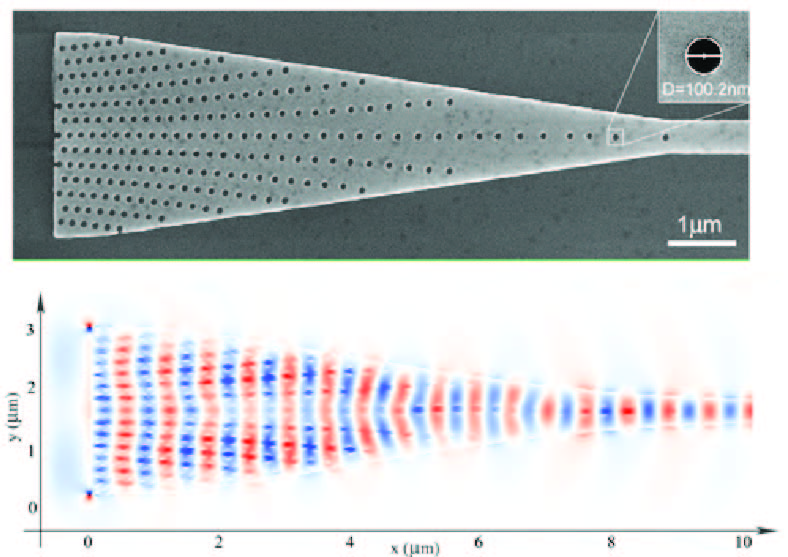
P. Markov, J. Valentine, and S. Weiss,"Fiber-to-chip
Coupler Designed Using an Optical Transformation", Optics
Express, vol. 20, no. 13, pgs. 14705-14713, 2012.
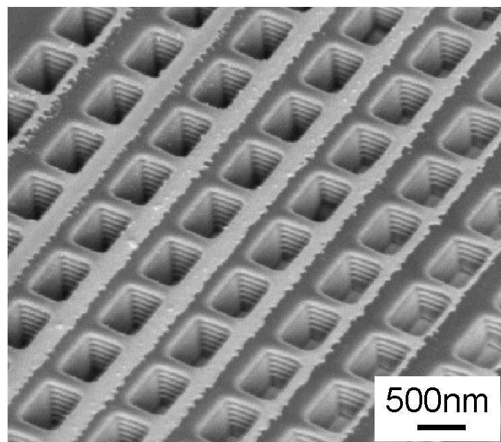
J. Valentine, S. Zhang, T. Zentgraf, and X.
Zhang,"Development
of Bulk Optical Negative Index Fishnet Metamaterials: Achieving a
Low Loss and Broadband Response Through Coupling", Proceedings
of the IEEE, Vol. 99, pgs. 1682-1690, 2011.
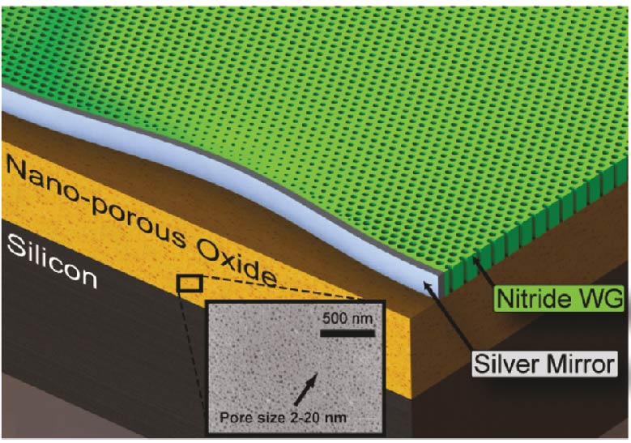
M. Gharghi, C. Gladden, T. Zentgraf, Y. Liu,
X. Yin, J. Valentine, and X. Zhang, "A
Carpet Cloak for Visible Light", Nano Letters,
Vol. 11, pgs. 2825-2828, 2011.
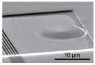
T. Zentgraf, Y. Liu, M. Mikkelsen, J.
Valentine, and X. Zhang, "Plasmonic
Luneburg and Eaton lenses", Nature Nanotechnology,
Vol. 6, pgs. 151-155, 2011.
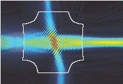
T. Zentgraf, J. Valentine, J. Li, N. Tapia,
G. Bartal, and X. Zhang, "An
Optical 'Janus' Device with Multiple Functions for Integrated
Photonics", Advanced Materials,
Vol. 22, pgs. 2561-2564, 2010.
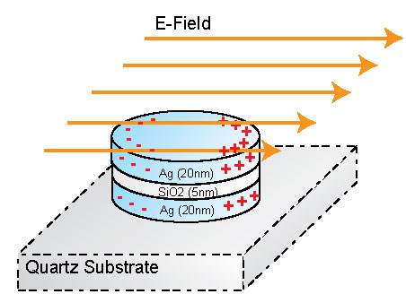
C. Sun, K. Su, J. Valentine, Y. Rosa-Bauza,
Jonathan A. Ellman, O. Elboudwarej, B. Mukherjee, C.S. Craik, M.A.
Shuman, F. Chen, and X. Zhang, ""Time
Resolved Single-step Protease Activity Quantification Using
Nanoplasmonic Resonator Sensors", ACS Nano,
Vol. 4, pgs. 978-984, 2010.
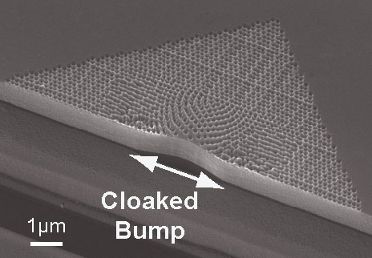
J. Valentine, J. Li, T. Zentgraf, G. Bartal,
and X. Zhang, "An
Optical Cloak Made of Dielectrics", Nature
Materials, Vol. 8, pgs. 568-571, 2009. (cover
article)
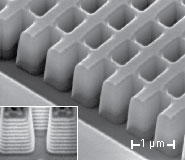
J. Valentine, S. Zhang, T. Zentgraf, E.
Ulin-Avila, D.A. Genov, G. Bartal and X. Zhang, "Three
Dimensional Optical Metamaterial Exhibiting Negative Refractive
Index", Nature, Vol. 455, pgs.
376-379, 2008.
Conference Talks
- Yuanmu Yang, Abdelaziz Boulesbaa, Ivan Kravchenko, Dayrl Briggs, Alexander Puretzky, David Geohegan, Jason Valentine, “Nonlinear Conversion Using Fano-Resonant All-Dielectric Metasurfaces”, OSA Nonlinear Metamaterial Incubator, Washington D.C. (Sept. 30 – Oct. 2, 2015). (invited)
- Yuanmu Yang, Parikshit Moitra, Ivan Kravchenko, Dayrl Briggs, Jason Valentine, “All-Dielectric Metasurfaces”, CLEO Pacific Rim, Busan, South Korea (August 24-28, 2015). (invited)
- Yuanmu Yang, Parikshit Moitra, Ivan Kravchenko, Dayrl Briggs, Jason Valentine, “High-Q All-dielectric Metasurfaces”, META 2015, New York, NY (August 4-7, 2015). (invited)
- Wei Li, Zachary Coppens, and Jason Valentine, “Metamaterial Perfect Absorber Based Hot Electron Photodetection”, META 2015, New York, NY (August 4-7, 2015).
- Yuanmu Yang, Abdelaziz Boulesbaa, Ivan I. Kravchenko, Dayrl P. Briggs, Alexander Puretzky, David Geohegan, and Jason Valentine, “Nonlinear Conversion Using Fano-Resonant All-Dielectric Metasurfaces”, OSA Nonlinear Optics Conference, Kauai, Hawaii (July 17-21, 2015)
- Yuanmu Yang, Parikshit Moitra, Ivan Kravchenko, Dayrl Briggs, Jason Valentine, “Silicon-Based Optical Metasurfaces”, ICMAT, Singapore, Singapore (June 28 – July 3rd, 2015). (invited)
- Yuanmu Yang, Parikshit Moitra, Ivan Kravchenko, Dayrl Briggs, Jason Valentine, “Realization of 2D and 3D All-Dielectric Optical Metamaterials”, EIPBN (3-beams) Conference, San Diego, CA (May 26-29, 2015). (invited)
- Wei Li and Jason Valentine, “Hot electron photodetectors based on metamaterial perfect absorbers” SPIE Photonics West, San Francisco, CA (Feb. 13-18, 2015). (invited)
- Wei Li and Jason Valentine, “Metamaterial Perfect Absorber Based Hot Electron Photodetection” PQE 2015, Snowbird, UT (Jan. 4-8, 2015). (invited)
- Jason Valentine, ”Manipulating Light with All-dielectric Metasurfaces” EMN Fall 2014 Meeting, Orlando, FL (Nov. 22-25, 2014). (invited)
- Jason Valentine, “Manipulating Light with All-dielectric Metasurfaces” CINT User Meeting & 6th International Workshop on Electromagnetic Metamaterials, Santa Fe, NM (September 22-23, 2014). (invited)
- Yuanmu Yang, Parikshit Moitra, Wenyi Wang, Zachary Anderson, Ivan Kravchenko, Dayrl Briggs, Jason Valentine, “Realization of 2D and 3D Optical Dielectric Metamaterials” META 2014, Singapore, Singapore (May 20-23, 2014). (invited)
- Jason Valentine, “Dielectric Metamaterials Go Optical” IMRE Metamaterials Workshop, Singapore, Singapore (May 19th, 2014). (invited)
- Jason Valentine, “All-Dielectric Optical Metamaterials” LANL Mesoscale Science Frontiers Conference, Santa Fe, NM (May 12-16, 2014). (invited)
- Wei Li, Zachary Coppens, Greg Walker and Jason Valentine, “Probing and Controlling Photothermal Heat Generation with Plasmonic Nanostructures” 2013 MRS Fall Meeting, Boston, MA (December 1-6, 2013).
- Parikshit Moitra, Yuanmu Yang, Zachary Anderson, and Jason Valentine, “Realization of All-dielectric Optical Metamaterials” 2013 CLEO Conference, San Jose, CA (June 9-14, 2013). (invited)
- Parikshit Moitra, Yuanmu Yang, Zachary Anderson, and Jason Valentine, “Zero-index All-Dielectric Metamaterials at Optical Frequencies” 2013 MRS Spring Meeting, San Fracisco, CA (April 1-5, 2013).
- Jason Valentine, Zachary Coppens, Wei Li, and Greg Walker, “Probing and Controlling Photothermal Heat Generation with Plasmonic Nanostructures” 2013 South Eastern Ultrafast Conference, Georgia Institute of Technology, Atlanta, GA (Jan. 10-11, 2013). (invited)
- Jason Valentine, “All Dielectric Zero-index Metamaterials at Optical Frequencies” 2012 Conference on Optoelectronic and Microelectronic Materials and Devices, Melbourne University, Melbourne, AU (Dec. 12-14, 2012). (invited)
- Jason Valentine, Parikshit Moitra, Yuanmu Yang, Wenyi Wang, “All Dielectric Optical Metamaterials” SPIE Optics and Photonics, San Diego, CA (August 11-16, 2012). (invited)
- Jason Valentine, Thomas Zentgraf, Yongmin Liu, Maiken H. Mikkelsen and Xiang Zhang, “Adiabatic Gradient Index Plasmonics” Metamaterials 2011, Barcelona, Spain (October 10-13, 2011). (invited)
- Jason Valentine, Thomas Zentgraf, Yongmin Liu, Maiken H. Mikkelsen and Xiang Zhang, “Plasmonic Luneburg and Eaton Lenses” PIERS 2011 Suzhou, Suzhou, China (Sept. 12-16, 2011). (invited)
- Jason Valentine, “Transforming Optical Space Using Nanomaterials” Southeastern Ultrafast Conference, Oak Ridge, TN (Jan. 13-14, 2011). (invited)
- Jason Valentine, Thomas Zentgraf, Yongmin Liu, Maiken H. Mikkelsen and Xiang Zhang, “Gradient Index Plasmonics” Nanometa 2011, Seefeld, Austria (Jan. 2-6, 2011).
- Jason Valentine, Jensen Li, Thomas Zentgraf, Guy Bartal and Xiang Zhang, "An Optical Cloak Made of Dielectrics." MRS Spring Meeting, San Francisco, CA, USA (April 5 to April 9, 2010).(MRS Gold Student Award Presentation)
- Jason Valentine, Jensen Li, Thomas Zentgraf, Guy Bartal, and Xiang Zhang, "Optical Cloaking Using Dielectrics" OSA Annual Meeting, San Jose, CA, USA (Oct. 11-15, 2009).
- Jason Valentine, Jensen Li, Thomas Zentgraf, Guy Bartal, and Xiang Zhang, "Cancer Detection Using SERS and an Optical Cloak." Agilent Technologies Research Meeting, Berkeley, CA, USA (June 10, 2009). (invited)
- Jason Valentine, Shuang Zhang, Thomas Zentgraf, Erick Ulin-Avila, Dentcho Genov, Guy Bartal, and Xiang Zhang, "Negative Refractive Index in a Bulk Optical Metamaterial." MRS Spring Meeting, San Francisco, CA, USA (Apr. 13-19, 2009).
- Jason Valentine, Shuang Zhang, Thomas Zentgraf, Erick Ulin-Avila, Dentcho Genov, Guy Bartal, and Xiang Zhang, "Negative Refractive Index in a Bulk Optical Metamaterial." LBNL Molecular Foundry Users' Meeting, Berkeley, CA, USA (Nov. 10-11, 2008). (invited)
- Jason Valentine, Shuang Zhang, Thomas Zentgraf, Erick Ulin-Avila, Dentcho Genov, Guy Bartal, and Xiang Zhang, "Negative Refractive Index in a Bulk Optical Metamaterial." OSA Annual Meeting, Rochester, NY, USA (Oct. 19-23, 2008).
- Jason Valentine, Shuang Zhang, Thomas Zentgraf, Erick Ulin-Avila, Dentcho Genov, Guy Bartal, and Xiang Zhang, "Negative Refractive Index in a Bulk Optical Metamaterial." Berkeley Nanotechnology Club, Berkeley, CA, USA (Sept. 4, 2008). (invited)
- Jason Valentine, Shuang Zhang, Thomas Zentgraf, Erick Ulin-Avila, Dentcho Genov, Guy Bartal, and Xiang Zhang, "Demonstration of Negative Refractive Index in a Three-Dimensional Optical Metamaterial." OSA Conference on Lasers and Electro-Optics/Quantum Electronics and Laser Science Conference (CLEO/QELS), San Jose, CA, USA (May 4-9, 2008). (post deadline)
- Jason Valentine, Kyle Su, Cheng Sun, Xiang Zhang, Marc Shuman, Fanqing Chen, "Nanoplasmonic resonator-based detection of proteolytically active PSA." SPIE West, San Jose, CA, USA (Jan. 19-23, 2007).